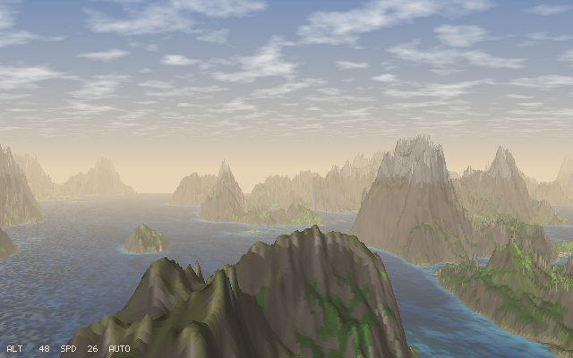
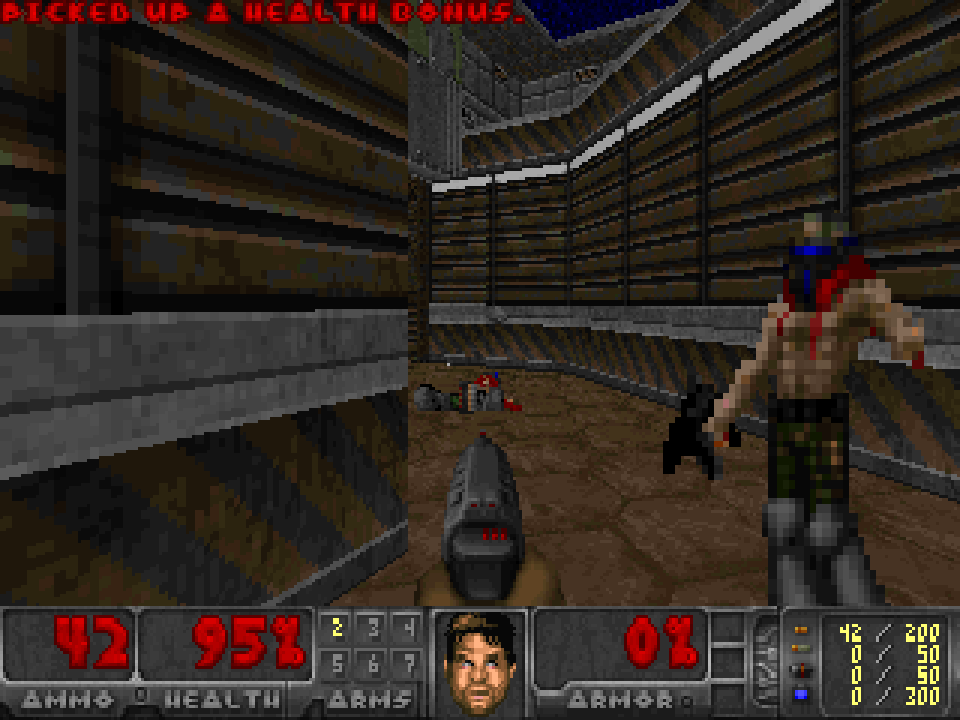
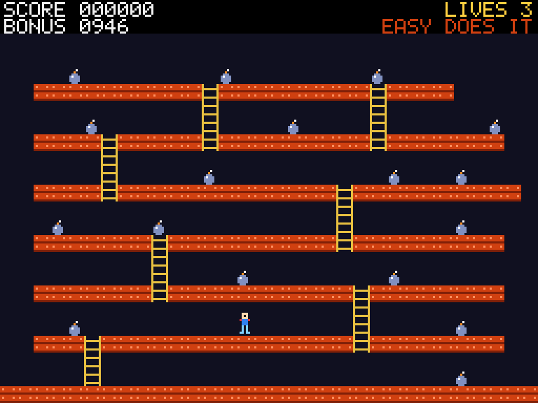
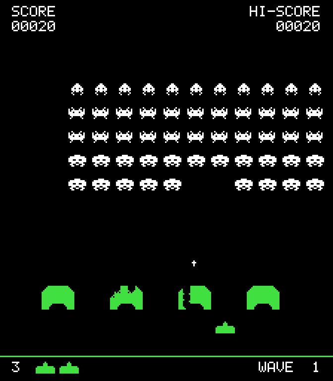
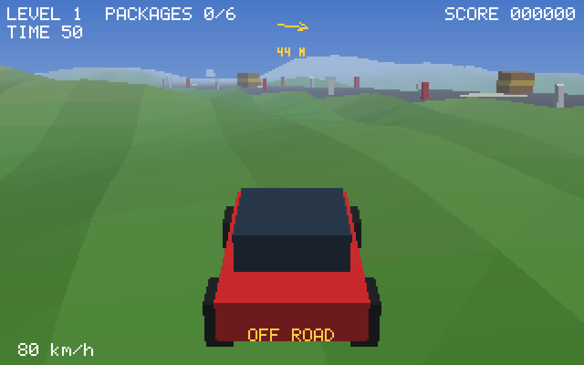
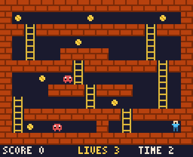

A game is one type with two methods: update reads the keys
and moves things, draw paints a frame of pixels. funkey runs
the loop at a fixed rate and puts the frame on the terminal. That is the
whole contract, and Doom fits it.
Half blocks in any terminal: two pixels a cell, in full colour, only the cells that changed. Real pixels through the kitty graphics protocol where the terminal has it, over shared memory in glass.
A terminal never says when a key is released. glass and kitty do, through the kitty keyboard protocol, so a held arrow walks and a tap takes one step. Elsewhere a key counts as held while its repeats come.
A mixer in the engine, piped to pw-play, paplay or aplay. WAV files, Doom lumps, or sounds made on the spot: tones, slides, noise, and tunes written as notes. Channels loop and change pitch while they play.
Sprites from rows of characters or PNG files, tile maps with platformer physics, particles, two fonts. A software 3D rasterizer with a depth buffer and fog. A WAD loader and a sector renderer that draws Doom's own levels.
Six games come with the engine. Each has its own version, shown on its
title screen and tagged in the repo; the crate version is the engine's.
Every one runs with cargo run --release --example <name>,
and with FUNKEY_PIXELS=kitty in glass or kitty for real pixels.
funkeys shows them as cards and plays the one you pick; every
release
carries it and the games as binaries.

A height map ray-cast a column at a time, the way Comanche did it, with the sun and its shadows baked in, haze, water that glitters, and clouds drifting over. The autopilot flies; take the controls when you like. There is nothing to win, only to look at.
cargo run --release --example soar

Every monster from both Dooms with Doom's own frame timings, all nine weapons, pickups, keys, doors, lifts, crushers, teleports, switches, the status bar with the face, the automap, the intermission, the sounds. Freedoom's WADs are free; Doom's own load the same way.
cargo run --release --example doom

Five levels of girders, ladders and ropes. Take every bomb, jump the bullets, dodge the robots, and do not fall too far. One bomb reveals hidden ladders, one takes girders away. A title tune, a high score.
cargo run --release --example jumpman

Fifty-five of them, marching down to the four-note beat that quickens as the rows thin. Shields crumble pixel by pixel from either side, a mystery ship crosses the top, and each wave starts a row lower.
cargo run --release --example invaders

A car on a winding road over the hills. Fetch the packages before the clock runs out, then more of them with less time. An arrow points at the nearest. Leave the road and the grass slows you.
cargo run --release --example drive

Ladders, coins, blobs. The smallest game on the engine, and the one to read first when you want to write your own.
cargo run --release --example climb
The game's own frames and sounds, written straight to video by a scripted run. Every pixel is what the terminal shows.
A bouncing ball is the whole shape of a game. Give it a name, a
Game impl, and run it.
use funkey::*; struct Ball { x: f32, y: f32, vx: f32, vy: f32 } impl Game for Ball { fn update(&mut self, input: &Input, dt: f32) -> Flow { if input.pressed(Key::Char('q')) { return Flow::Quit; } self.x += self.vx * dt; self.y += self.vy * dt; if self.x < 0.0 || self.x > 156.0 { self.vx = -self.vx; } if self.y < 0.0 || self.y > 96.0 { self.vy = -self.vy; } Flow::Continue } fn draw(&mut self, f: &mut Frame) { f.clear(0x102030); f.rect(self.x as i32, self.y as i32, 4, 4, 0xffcc00); } } fn main() { run(&mut Ball { x: 10.0, y: 10.0, vx: 60.0, vy: 40.0 }, Config { width: 160, height: 100, fps: 60 }); }
# Cargo.toml
[dependencies]
funkey = { git = "https://github.com/isene/funkey", package = "fe2o3-funkey" }
From there: Sprite::from_rows for art, Tilemap
and Body for a level that can be walked, Audio
with Sample::tone for a sound made of nothing,
Raster for a third dimension. With FUNKEY_SCRIPT
set, a game runs with no terminal and writes its frames, so it can be
tested, and filmed.